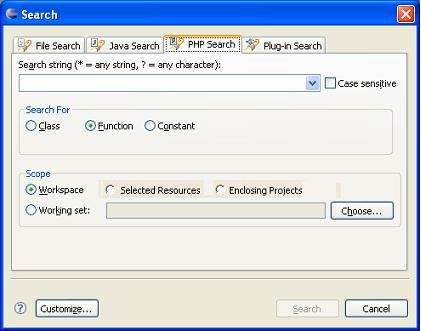

The Eclipse PHP IDE's search functions enable you to find declarations of Classes, Functions and Constants.

Figure 1 - Search Dialog
The Search dialog includes the PHP Search tab with the following fields:
'?' matches any character
" \ " is the escape for a literal; to search for an asterisk, question mark, or backslash character, type a backslash before it to indicate that you are not using these characters as wildcards (e.g., "\*", "\?", or "\\")